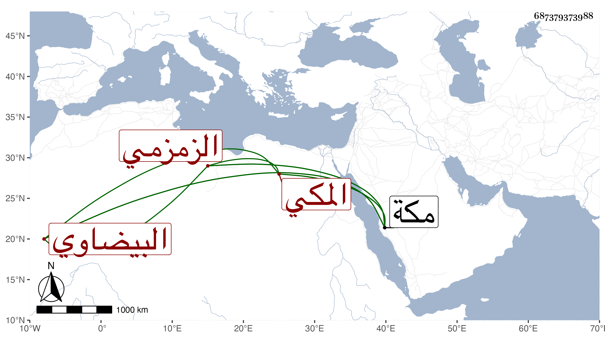

0902Sakhawi.DawLamic.ITO20230111-ara1.EIS1600.687379373988
Biography ID: 687379373988
336
محمد بن إسماعيل بن علي بن داود بن شمس بن رستم بن عبد الله جمال الدين بن العلامة المجد البيضاوي المكي الزمزمي الماضي أبوه وولده علي . ولد سنة إحدى عشرة وثمانمائة وقال ابن فهد تسع بمكة وحفظ القرآن وسمع على الزين المراغي البعض من الصحيحين وأبي داود وابن حبان في سنة ثلاث عشرة والتي بعدها وعلى الجمال بن ظهيرة الختم من ابن حبان . وباشر الأذان ورأيته كتب على استدعاء في سنة إحدى وتسعين . وعمر حتى مات في ليلة الاثنين سابع عشر ذي الحجة سنة اثنتين وتسعين وأنا بمكة .
